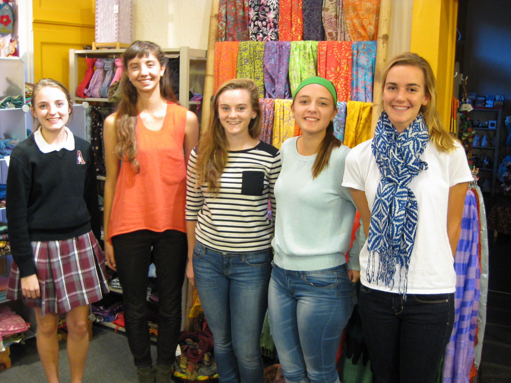

Just Creations opened its doors for operation in April 1990 as an outgrowth of Covenant Crafts, a store of similar nature whose proprietors were moving on in their ministry. It was established as an outreach ministry of St. William Catholic Community when they decided it was within their mission as a peacemaking community to keep it going. They provided some of the initial seed money, volunteers, and Board members to establish Just Creations.
Since that time, Just Creations, separately incorporated as a not-for-profit 501(c)(3) corporation, has broadened its outreach to churches of all denominations and the Louisville Community in general. We are proud of our special connection with St. William and continue to nurture that relationship while we invite all people to become a part of the Fair Trade movement.
One of our major goals as a Fair Trade organization is to educate the public about the importance of Fair Trade. Toward this end, our Education Coordinator is always available to give presentations to community groups, and these presentations are free of charge. We are also available to do educational booths at community events. To schedule a presentation or request a booth at a community event, please contact the store at info@justcreations.org.
Another important part of our Education Program is our Fair Trade Ambassador Program. Started in 2007, it provides experiential education in Fair Trade to selected high school students. Our hope is that they will develop an enduring commitment to Fair Trade and its principles, and in turn educate their peers.

A group of juniors is selected each fall from area high schools. The students volunteer in the store, attend coursework sessions on Fair Trade topics, give a presentation at their school, and at the end of the program, go on a trip to visit other Fair Trade organizations in the region. The 2014-2015 Ambassadors are (left to right): Haylie Maraldo, Emmaly Saliga, Katie Williams, Chloe Batsch, Julie Hummel and Becca Willenbrink (not pictured).
According to one of our Ambassadors after she completed the program, “The experience has been the most valuable of my high school years for it has shaped the person I wish to become.”